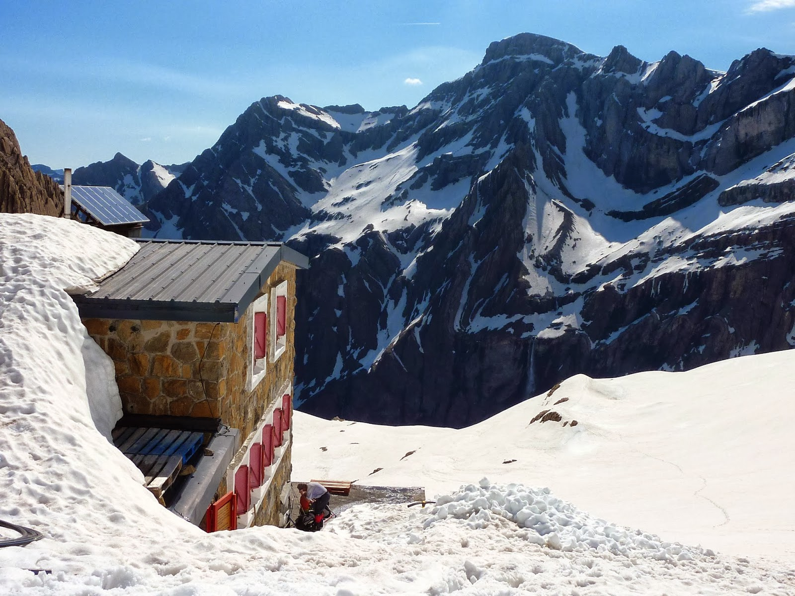
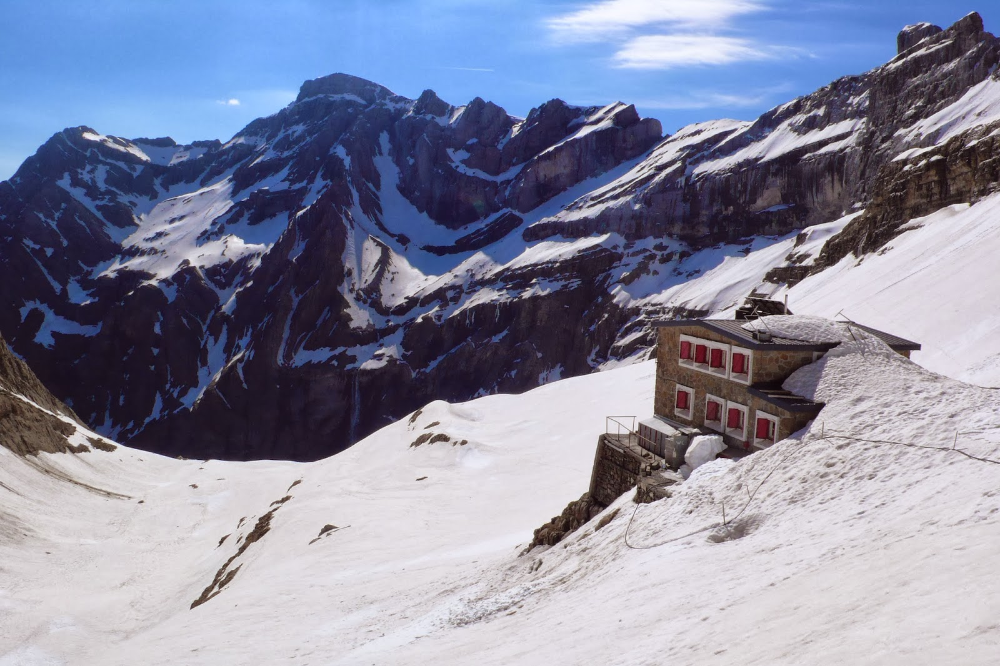

INICIO |
Cilindro de Marboré |
Pico de Marboré |
Monte Perdido |
Pico Añisclo |
Taillón |
|   |
El pico de Marboré es una cumbre del Pirineo del macizo de Monte Perdido, situado en una cresta de picos de más de 3000 m que hace de frontera entre España (Valle de Ordesa) y Francia (Circo de Gavarnie), estando incluido tanto en el español Parque Nacional de Ordesa y Monte Perdido como en el francés Parque Nacional de los Pirineos. Junto con los Picos de la Cascada forma la impresionante pared norte del Circo de Gavarnie, con 1500 m de desnivel desde el fondo del valle y donde se encuentra la mayor cascada de Europa, la Cascada de Gavarnie con 425 m de caída. |
||||